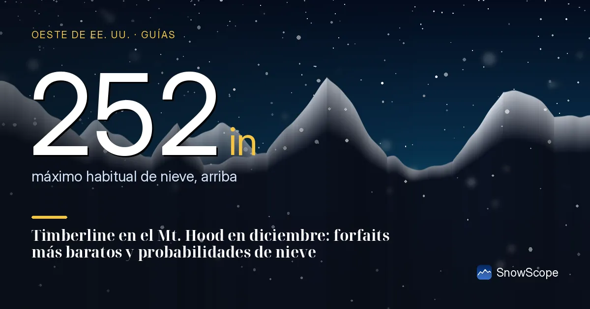

Timberline en el Mt. Hood en diciembre: forfaits más baratos y probabilidades de nieve
Timberline Lodge Ski Area se sitúa en el volcán más alto de Oregón, con nieve que se profundiza marcadamente conforme subes. Media montaña mantiene polvo confiable en diciembre, y las entradas de tarde en temporada baja cuestan casi la mitad que en días punta.
Consulta la previsión de nieve en tiempo real de Timberline Lodge Ski Area en la app SnowScopeEspesor de nieve, alertas de nieve polvo y mapa 3D, gratis.
La altitud marca la diferencia a principios de invierno
Timberline se extiende por 1 372 m de vertical en la ladera sur de Mt. Hood. La base a 1 214 m está en una zona marginal para la nieve en diciembre, pero subir lo cambia todo. A media montaña, 1 900 m, llegas a la temporada confiable; en la cima, 2 586 m, la nieve está casi siempre presente.
El 15 de diciembre, las profundidades típicas son 42 cm en la base, 132 cm a media montaña y 147 cm en la cima. En 1 de cada 10 inviernos pasados, la base estuvo sin nieve mientras la montaña superior tenía buen esquí. Por eso Timberline tiene 12 remontes: te permiten saltarte la base y trabajar el terreno superior.

Cuándo comprar: cuatro precios de entrada
Los precios de Timberline en 2026-27 tienen tarifas claras en temporada baja y punta. Una entrada de día completo para adulto (19-64 años) cuesta 129 $ en temporada baja o 161 $ en días punta. Una entrada de tarde desde mediodía a cierre sale 96 $ en temporada baja o 124 $ en punta. Los días punta incluyen todos los fines de semana y del 21 de diciembre al 1 de enero.
La opción más barata es una tarde en temporada baja a principios de diciembre por 96 $. Un día completo entre semana a principios de mes sale 129 $. Si tienes que esquiar la semana de vacaciones (21 dic-1 ene), presupuesta 161 $ para día completo o 124 $ para tarde. Los días entre semana de mediados de diciembre ofrecen el mejor equilibrio entre precio y fiabilidad.

¿Con qué frecuencia tiene buena nieve media montaña?
A 1 900 m, la buena nieve (una media semanal de 50 cm o más) aparece en el 76 % de los inviernos en la primera semana de diciembre, el 74 % en la segunda semana, y el 85 % en cada una de las dos semanas antes de Año Nuevo. Estas probabilidades mejoran conforme avanza la temporada.
La diferencia entre inviernos buenos y magros es amplia. El 15 de diciembre, uno de cada diez inviernos tuvo solo 26 cm de nieve a media montaña, mientras que uno de cada diez tuvo 281 cm. La temporada pasada fue notablemente pobre en esa fecha—la montaña comenzó sin nieve—así que puede ocurrir. Las laderas superiores se mantienen más confiables: el 15 de diciembre, el 80 % de los inviernos tuvieron 50 cm o más en la cima.
Cómo se compara con White Pass y Mt. Bachelor
White Pass en Washington, 60 millas al norte, vende en línea desde 69 $ en temporada baja hasta 119 $ en punta. Su profundidad típica a media montaña el 15 de diciembre es 102 cm, con buena nieve en el 87 % de los inviernos. Mt. Bachelor cerca de Bend, Oregón, está más alto y recibe más nieve: 139 cm en un 15 de diciembre típico, bueno en el 83 % de los inviernos.
Media montaña de Timberline a 132 cm el 15 de diciembre está entre ellas en profundidad de nieve. Para nieve pura en diciembre, Mt. Bachelor lidera ligeramente, pero Timberline subestima ambos en precio de entrada si reservas días entre semana en temporada baja a principios de mes. White Pass gana en precio si compras con mucha antelación.
Lo que muestran las laderas superiores
La cima de Timberline a 2 586 m es donde la fiabilidad de nieve en diciembre se vuelve muy alta. El 15 de diciembre, la profundidad típica es 147 cm, y la buena nieve aparece en el 80 % de los inviernos. Para Navidad, la profundidad típica alcanza 185 cm, y para Nochevieja llega a 228 cm.
En un invierno magro (uno de cada diez), incluso la cima tuvo solo 103 cm el 15 de diciembre. En un invierno grande, la cima tenía 310 cm. Si esquías las laderas superiores y evitas los remontes de base, mediados de diciembre en adelante es muy sólido.
Planeando tu viaje
Reserva una tarde en temporada baja en las tres primeras semanas de diciembre para combinar bajo coste y buenas probabilidades. Sube por los remontes de alta velocidad directo a media montaña o la cima; ignora la base a principios de temporada. Para la semana de Navidad, toda la montaña tiene nieve confiable a todas las alturas, pero espera precios de punta y multitudes.
La US-26 desde Portland asciende a Government Camp a unos 1 829 m; las cadenas pueden ser obligatorias incluso cuando el área de esquí está abierta. Consulta el pronóstico de carreteras antes de partir. El mapa de nieve te dirá si es un diciembre de mucha nieve o poca nieve, y puedes planificar tu estrategia de altitud en consecuencia.
Consejos para esquiadores
- Esquía una tarde entre semana en las dos primeras semanas de diciembre a la tarifa de 96 $ en temporada baja; la montaña superior tiene buenas probabilidades de nieve y evitas multitudes de vacaciones.
- Comienza tu día a media montaña o la cima—los remontes de base sirven nieve fina a principios de diciembre. Deja las bajadas inferiores para finales de temporada.
- Espera uno de cada diez inviernos para empezar muy pobre en la base. Si llegas a terreno desnudo, sube a 1 900 m o superior donde la nieve es más segura.
- Lleva cadenas y consulta las condiciones de carretera de la US-26 antes de conducir desde Portland; Government Camp está a 1 829 m y la nieve allí es común en diciembre.
- Consulta el mapa de nieve de SnowScope en la semana antes de tu viaje para ver si este diciembre va camino de ser un invierno de mucha o poca nieve; el rango es grande.
Sobre estas cifras
Los espesores de nieve de las estaciones son la nieve más profunda en las pistas altas en la fecha indicada; son estimaciones para una zona, no una medida en un punto. Las previsiones pueden cambiar. Consulta siempre el boletín oficial de aludes antes de salir fuera de pista.
Boletines oficiales de aludes: avalanche.org (US national portal)
Citar este informe
Para investigación, docencia o prensa: cifras y gráficos reutilizables libremente bajo CC BY 4.0 con esta cita.
SnowScope (2026), Timberline en el Mt. Hood en diciembre: forfaits más baratos y probabilidades de nieve, https://snowscope.app/blog/es/2026/11/timberline-mt-hood-december-ski-on-a-budget.html, consultado el 2026-11-15
SnowScope (Atlas Labs). (2026, November 15). Timberline en el Mt. Hood en diciembre: forfaits más baratos y probabilidades de nieve. SnowScope snow reports. https://snowscope.app/blog/es/2026/11/timberline-mt-hood-december-ski-on-a-budget.html
BibTeX
@misc{snowscope2026timberlinemthooddecember,
author = {{SnowScope (Atlas Labs)}},
title = {Timberline en el Mt. Hood en diciembre: forfaits más baratos y probabilidades de nieve},
year = {2026},
month = nov,
howpublished = {\url{https://snowscope.app/blog/es/2026/11/timberline-mt-hood-december-ski-on-a-budget.html}},
note = {Published 2026-11-15 09:34 UTC; accessed 2026-11-15}
}· CC BY 4.0 · Métodos, datos y herramientas →
Sigue Timberline Lodge Ski Area
Gratis: un aviso cuando llega la nieve y la previsión cada mañana.